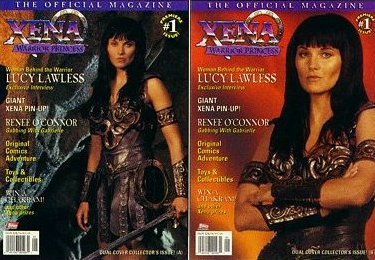
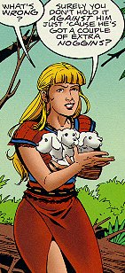
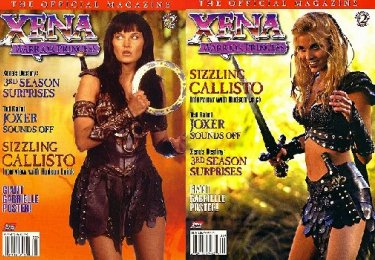
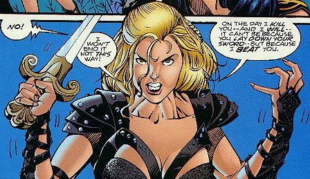
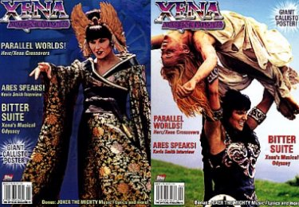
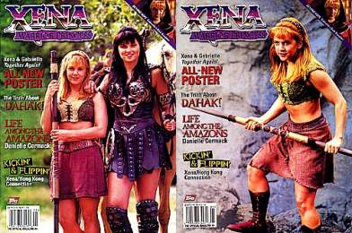
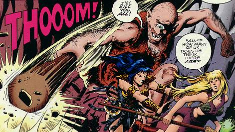
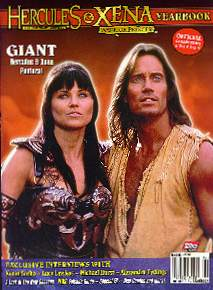
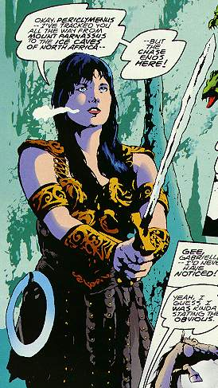

The Official Xena: The Warrior Princess Magazine #1
Title: Let Sleeping Dogs Lie
Date: Fall 1997 (Quarterly)
Actual Release: Oct 8, 1997
Pages: 6
Cover Price: $4.95
Writer: Roy Thomas
Pencils: Claude St. Aubin
Inks: Rick Magyar
Letter: John Workman
Colors: Digital Chameleon
Editor: Charles S Novinskie
OVERVIEW:
As Xena and Gabrielle are camping for the night, Gabrielle finds a three-headed puppy. Xena realizes immediately whose offspring it is, but it's too late, Cerberus is already looking for his kid. Gabrielle nearly gets killed, but eventually Cerberus goes off with the puppy without killing either of our two heroes.
COMMENTS:

You would think that Gabrielle would've learned after the Pegasus incident. She obviously has this thing about animals...
The art is excellent, once again. I think they even managed to get Gabrielle's hair color right. Sort of.
The puppy is so cute I don't blame Gabby for falling for it. I am a bit surprised she didn't make the connection to Cerberus herself. Three heads, in a cave, what else could he be?
CONCLUSION:
This story alone isn't quite worth the price of the magazine, but add in all the other neat stuff you get, and the magazine is a bargin. Get it!
Review Date: 18 Oct 1997 by Laura Gjovaag

The Official Xena: The Warrior Princess Magazine #2
Title: Callisto's Final Triumph
Date: Winter 1998 (Quarterly)
Actual Release: 4 February 1998
Pages: 6
Cover Price: $4.95
Writer: Roy Thomas
Artist: Claude St Aubin
Letter: John E Workman, Jr
Colors: Jessica Kindzierski and Digital Chameleon
Editor: Dwight Zimmerman
OVERVIEW:
Xena and Gabrielle are trekking through the hills of Arcadia when they see something run around a boulder, Xena goes one way around the boulder, and Gabrielle goes the other. Xena encounters a huge ogre creature that claims to have killed Gabrielle, so Xena beheads it.
To her surprise, Callisto appears and tells her that she just killed a magically disguised Gabrielle. They battle.

Xena stops fighting suddenly, and tells Callisto that her crimes mean she deserves death. She tells Callisto to kill her. Callisto can't do it, though, she wants to beat Xena, not have Xena give in. Callisto leaves, and the enchanted body of the ogre no longer appears to be Gabrielle...
Which is just as well, since Gabrielle comes around the corner and asks Xena what happened. Xena explains the whole event, and the two wander off together.
COMMENTS:
Xena knew she hadn't killed Gabrielle because she smelled the ogre and felt the ground shaking when it approached. Gabrielle doesn't smell that bad, she notes when retelling the story.
Callisto taunts Xena with the concept that the two are equals, and that Xena will grow tired but Callisto won't. This only gets Xena to finish up the contest early.
This issue also features a painting of Xena and Callisto fighting by Dave DeVries, and a story that is bookended by the comic book Xena and Gabrielle entitled: "Vengeance Everlasting" which tells the origins of Callisto.
CONCLUSION:
Another good short from excellent writer Roy Thomas.
Review Date: 27 Nov 1998 by Laura Gjovaag

The Official Xena: The Warrior Princess Magazine #3
Date: Spring 1998 (Quarterly)
Actual Release: 20 May 1998
Cover Price: $4.95
COMMENTS:
Sorry, no comic story in this one...

The Official Xena: The Warrior Princess Magazine #4
Title: Eye of the Beholder
Date: Summer 1998 (Quarterly)
Actual Release: ?? 1998
Pages: 6
Cover Price: $4.95
Writer: Roy Thomas
Artist: Rick Magyar
Letter: John Workman
Colors: Brad Anderson
Editor: Dwight Zimmerman
OVERVIEW:
On a cloudless sunny day, Xena tells Gabrielle that she's expecting a thunderbolt. To Gabrielle's surprise, one strikes near them. Xena explains that they are in Cyclops Country, and one of them has stolen a tunderbolt from Zeus.

The wielder of the now used-up thunderbolt appears, and threatens the pair, mistaking them for men who drove him off to protect their cattle.
Xena can't get close enough to defeat the cyclops, so the pair run away. But Gabrielle falls and hits her head, and the cyclops, Acamas, takes her away to eat her.
Xena follows Acamas to his cave, and takes the fused glass from where the thunderbolt hit with her. She dangles it in front of Acamas, and he sees Gabrielle clearly for the first time. With his new glass, he can now see clearly enough to hunt, and he decides that there is no need to eat men's cattle, much less men themselves.
COMMENTS:
Gabrielle is insulted when Acamas calls her "evil". And, for that matter, "men". She asks Xena why every cyclops they meet is mean.
This issue of the magazine focuses on Gabrielle's turn toward evil, the comic is a nice bit of relief from that motif.
CONCLUSION:
Yet another good tale from excellent writer Roy Thomas.
Review Date: 27 Nov 1998 by Laura Gjovaag

The Official Hercules and XenaYearbook
Title: The Shape of Things
Date: Fall 1998
Actual Release: 25 Nov 1998
Pages: 6
Cover Price: $5.95
Writer: Roy Thomas
Artist: Robert Teranishi
Letter: John Workman
Colors: Digital Chameleon
Editor: Dwight Zimmerman
OVERVIEW:
Xena is chasing Periclymenus, aka the Shaper, the foe she and Hercules battled long ago. She's cornered him at the ice caves of North Africa, and the two battle. The Shaper falls and it trapped in the ice, where Xena is content to leave him.
Xena and Gabrielle go to Carthage, where they meet up with Aeneas again. They learn that Dido, queen of Carthage, is keeping Aeneas prisoner as her King. Rather than leave him there, they free him and are chased back to the ice caves by Queen Dido's men.
Xena offers frozen Periclymenus a unique deal. He can either take Aeneas' place, and rule Carthage, or stay forever frozen in the caves. He agrees, and Dido takes the false Aeneas. The true Aeneas sets off to found a new Troy.

COMMENTS:
All that Periclymenus wants is to rule a mighty kingdom. Since Xena and Hercules stand in his way, he wants to kill them. But Xena offers him his dream, without ever having to fight anyone.
The yearbook also includes a trio of themed prints done by artist Robert Teranishi. The first has Iolaus and Gabrielle fighting off dragons, the second shows Hercules battling a giant serpent, and the third has Xena preparing for a new foe after vanquishing a giant.
The yearbook has a centerfold illustration by Ken Steacy of Xena battling a stone giant.
CONCLUSION:
A fun little story that wraps up the one loose end left from the Topps reign.
Review Date: 27 Nov 1998 by Laura Gjovaag